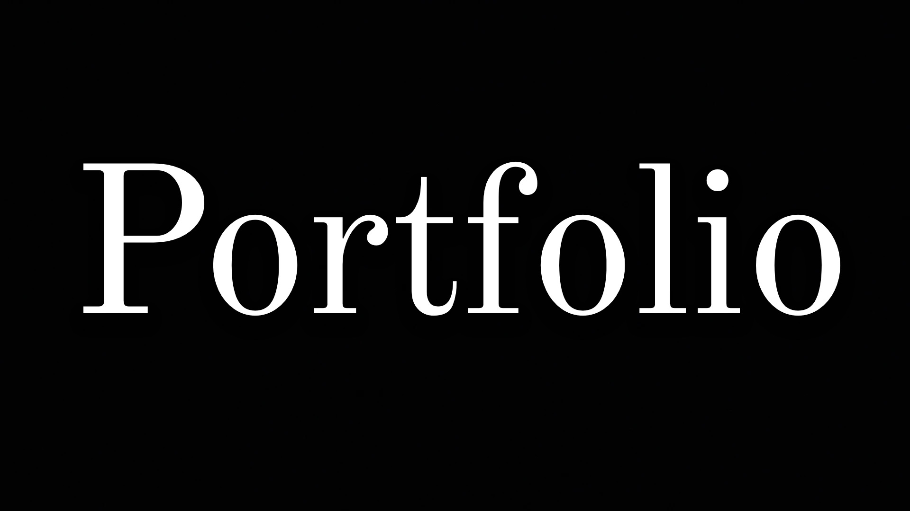
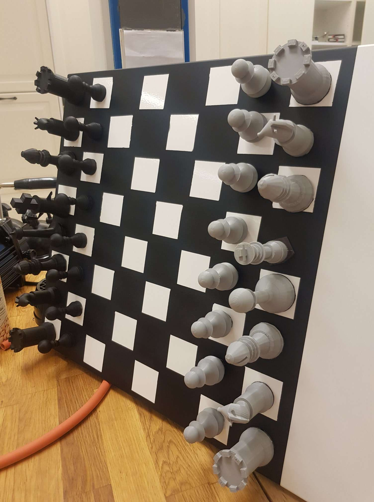
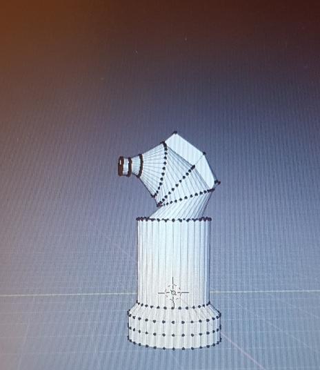
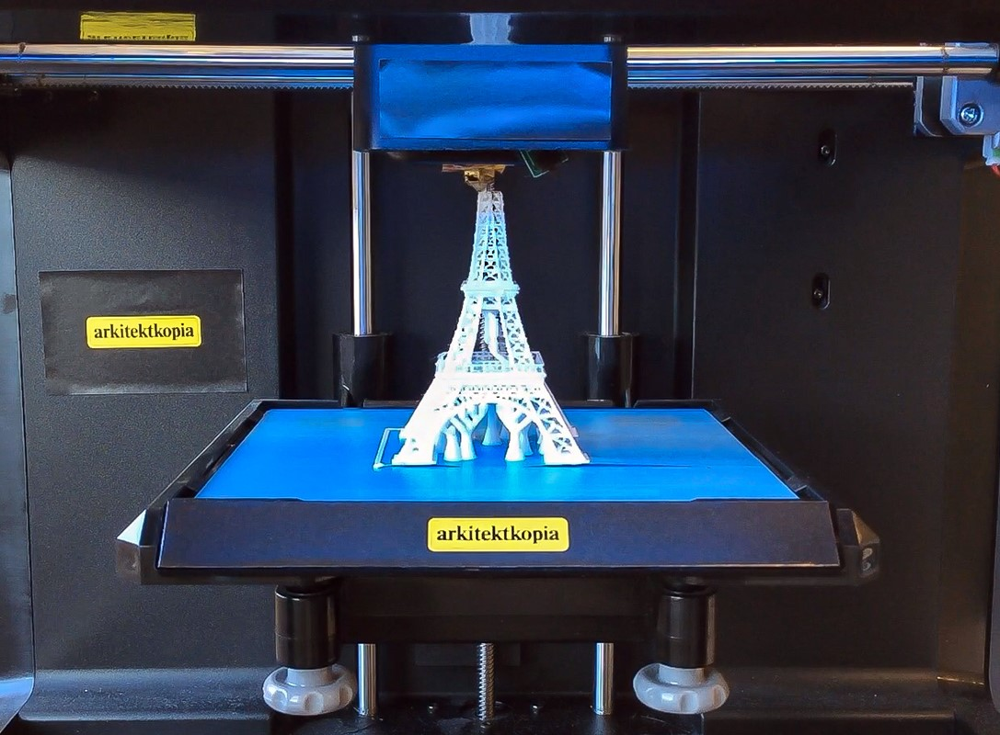
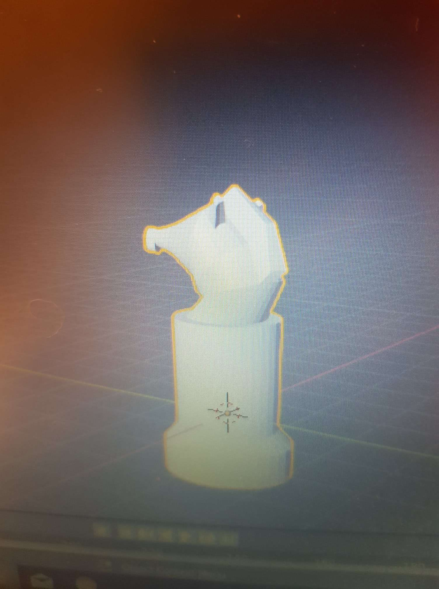

Blender 3D Models
Ett schackspel tillverkat i Blender 3D.



Blender är en fri programvara för skapande av 3D-grafik. Den används inom animation, 3D-modellering och 3D-printing, UV-kartläggning, konst, virtual reality och spelutveckling.
Blender finns till ett stort antal operativsystem, bland annat GNU/Linux, Windows, Mac OS, Solaris och FreeBSD.